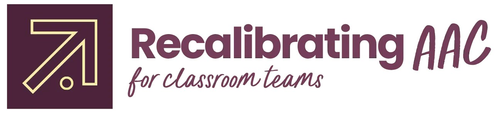

THIS ISN'T JUST ANOTHER BUY-IN COURSE.
Recalibrating AAC is a capacity-building system for SLPs tired of carrying the responsibility of AAC alone. Finally build a team that can partner with you to create an environment where AAC can actually thrive.
Course now live! Get instant access today for $97
You did everything right, but...
You schedule a team training, explain the importance of AAC access and modeling and make sure everyone in on the same page.
You push-in, follow-up, and encourage the team every step of the way so nothing and no one falls through the cracks on your watch.
You model AAC yourself, encourage the classroom team to model more, and do everything in your power to be a good example.
You're emotionally exhausted. You're the one adult in the building who seems to notice whether a kid gets to have a voice today.
You're over-worked. There's an SLP shortage due to underfunding, overcrowding, or just a lack of AAC training but either way it always lands on you. You're doing the work that was never supposed to be a one-person job.
You're frustrated and sometimes just plain pissed. You're investing your time and effort in planning, training, and executing just for the team to throw the device in a backpack when you're not around.
You just need a game-plan that focuses less on buy-in and more about smaller, sustainable results that build trust and make a big difference.
What if your year looked more like this?
IT'S MORE THAN POSSIBLE.
You walk into a classroom and the para is already modeling on the core board before you’ve said a word.
One bad day is just one bad day and progress doesn’t get derailed because everyone understands the main, overall goal here is AAC trajectory, not buy-in.
Your documentation already reflects your actual workload (not just the therapy minutes) so admin can’t act like you’re only complaining.
Your service delivery model is the perfect mix of push-in support, 1:1 therapy, and indirect services tailored to your unique caseload and workload.
Teachers and paras actively reach out to you with questions, suggestions, and solutions instead of hiding the device away because things got chaotic.
The whole team supports AAC and for the first time in years, AAC in your building isn’t just the SLP’s job.
THE GOAL WAS NEVER A PERFECT CLASSROOM BY OCTOBER.
The goal is tiny, one-degree shifts that set your trajectory in a slightly different direction to make big changes for your students, your team, and your capacity.
That’s what I teach inside…
Recalibrating AAC for Classroom Teams isn’t just another training that simply teaches AAC buy-in tips and tricks. This is the game plan that no one teaches: how to actually move a team, one degree at a time, to mitigate SLP burn-out and workload , increase team capacity, and get started training teams quickly and effectively.
HERE'S HOW IT WORKS
Treat your team like you treat your students and presume competence. Trade “gotta get buy-in ASAP” for a trajectory you can actually sustain.
The exact framework, decision tree, and personality-specific approach for moving a real classroom team, not a textbook one.
Document as you build capacity so your workload is defensible and protected next time admin hands you a bigger caseload.
HERE'S EVERYTHING INSIDE.
Cause I know you've got places to be.
MODULE 1
Why "convince the team first" backfires, and the trajectory-based mindset that replaces it
The Least Dangerous Assumption, applied to your students AND to yourself as the implementor
Three real starting points for any team, so you're never guessing where to begin
MODULE 2
The Four Laws of Behavior Change, translated for AAC teams
A four-step coaching progression for building real, lasting communication partner competence
Five team personalities you'll recognize on sight, and exactly how to approach each one
MODULE 3
Present levels that name real competence across five domains
How to document team training as a real, defensible part of your service delivery model.
The caseload-versus-workload distinction and the ASHA Workload Calculator
BONUS 1
No more guessing where to begin. Just answer a few questions about your classroom, get a straight recommendation: specific language system first, universal core board, or the full assessment-and-funding path.
BONUS 2
The exact AAC Self-Rating Survey and ready-to-use training slides I use with my own teams so you don’t have to start from scratch. Know exactly what your team knows, where the real gaps are so you know exactly where to start.
BONUS 3
Use the modeling tracker to run a one-week or one month challenge that makes modeling visible. Make consistent and measurable gains to keep the team encouraged and making progress.
SAVE WHEN YOU BUY DURING PRE-SALE
WHEN YOU BUY FROM ME
Buying a course (in this economy?!) is no small investment. Whenever I update any course, no need to re-purchase newer versions. When you buy this course the first time, you’ll always get updates in your course portal at no additional cost.
So, I know you might be asking...
I’ve also stood in that doorway. I’ve modeled AAC on Monday and watched it disappear by Wednesday, more times than I can count, before I understood why. When I figured out that it boiled down to just being a human showing up for another human, everything changed.
Since then, I’ve trained classroom teams to support AAC for over a decade. Over a thousand SLPs have gone through my programs or sat in my trainings. I keep getting invited back to speak on this exact problem, because it doesn’t go away on its own and it’s happening in every classroom.
I’ve analyzed the research, my own experiences and perspectives, and extracted feedback from real school-based SLPs to put together a resource that is worth the little time you have to increase capacity, reduce your workload, and start making meaningful change for classroom teams.
OVER 1,000+ SLPS TRAINED
INTERNATIONALLY RECOGNIZED AAC SPECIALIST
ACTIVELY PRACTICING IN THE SCHOOL SETTING
FEATURED KEYNOTE SPEAKER & EDUCATOR
"Emily is very passionate about her work. She is extremely knowledgeable and skilled in AAC. Her individualized plans, including the student, parents, and staff, ensure progress and provide the gift of communication."
Probably not everything that’s built specifically for your team’s personality. Module 2 gives you five distinct team profiles and a different approach for each, because the Perfectionist on your team and the Veteran on your team need two different conversations. And remember: not everyone has to be excited about AAC on day one. That was never the bar. One degree of progress is.
Yes. This course qualifies for 2.5 ASHA Professional Development Hours.
You’re covered by a 7-day, no-questions-asked refund. If it’s not right for you, request it within 7 days of purchase and you’ll get your money back. No forms to justify, no hoops.
You’ll get your login link by email right after checkout.
No. I didn’t just repackage that course. I built past it with a completely different goal in mind. The buy-in strategies from the original course didn’t stop working, but this course is more comprehensive with two additional essential elements not included in the first. If you purchased my AAC in the Classroom workshop, Recalibrating AAC takes supporting AAC in the classroom to the next level.
Of course! In addition to my years of experience, the following research is referenced in the course:
Kent-Walsh, J. (2008). Communication Partner Interventions for Students Who Use AAC.
Senner, J.E., & Baud, M.R. (2016). The use of an 8-step instructional model to train school staff in Partner-Augmented Input.
Biggs, E.E., Carter, E.W., & Gilson, C.B. (2019). A Scoping Review of the Involvement of Children’s Communication Partners in Aided Augmentative and Alternative Communication Modeling Interventions.
O’Neill, T., Light, J., et al. (2018). Effects of Interventions That Included Aided Augmentative and Alternative Communication Input on the Communication of Individuals With Complex Communication Needs: A Meta-Analysis.
Marante L, Hall-Mills S, Farquharson K. School-Based Speech-Language Pathologists’ Stress and Burnout: A Cross-Sectional Survey at the Height of the COVID-19 Pandemic. Lang Speech Hear Serv Sch. 2023 Apr 3;54(2):456-471. doi: 10.1044/2022_LSHSS-22-00047. Epub 2023 Jan 30. PMID: 36716449.
Guskey, T. R. (2002). Professional development and teacher change. Teachers and Teaching: Theory and Practice, 8(3/4), 381-391.
"Having Emily come into the classroom was such a great opportunity. Her resources and knowledge in AAC helped the staff in my classroom better understand and meet our student's communication needs. Her expertise and services are highly recommended!"
You should be far more concerned with your current trajectory than your current results